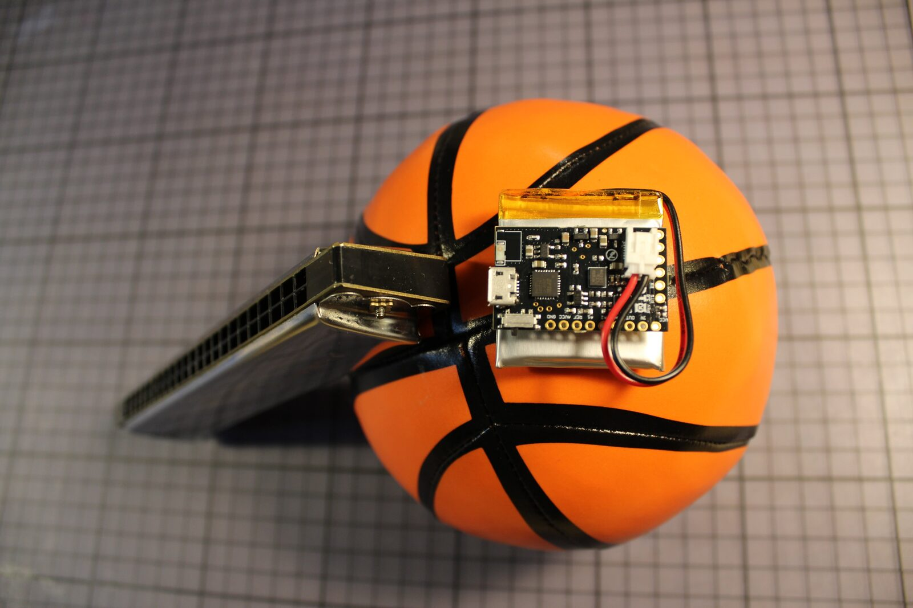
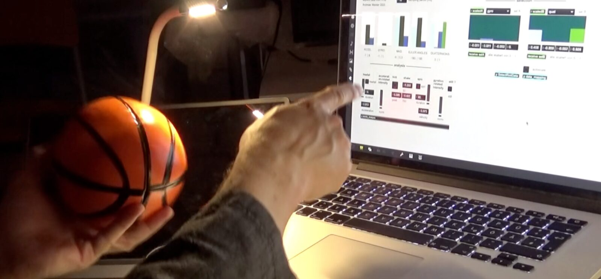
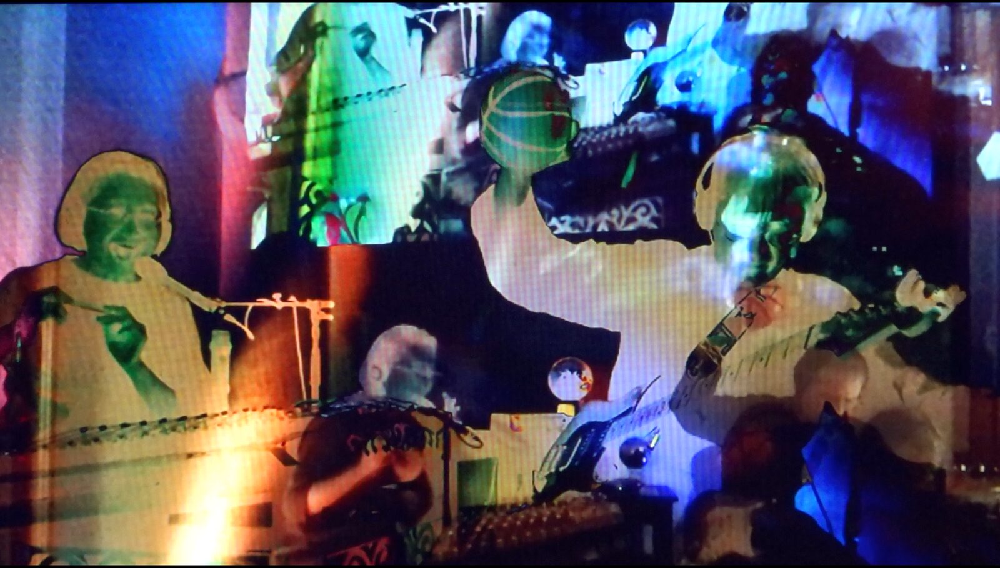
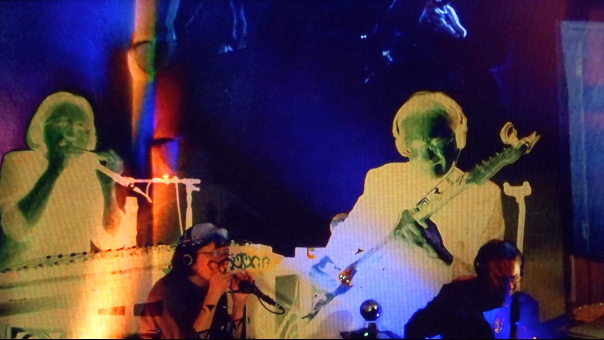
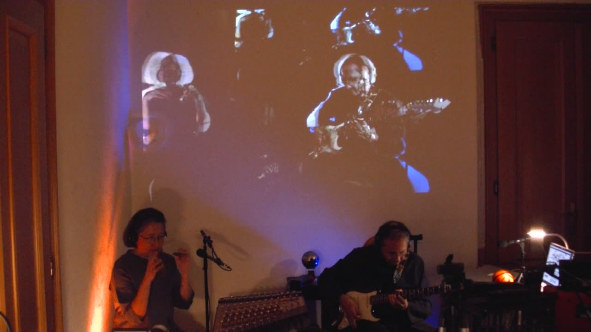

intuitive access
Project Description
intuitive access (2021/22) by Se-Lien Chuang & Andreas Weixler
machine improvisation for R-IoT playing ball, voice, mouth organ, electric guitar with audiovisual realtime processing
duration of the performance: 6 - 9 minutes, adjustable
voice, mouth organ and interactive visuals, Se-Lien Chuang
R-IoT playing ball, electric guitar and realtime audio processing, Andreas Weixler
The improvisation is completed by an audio realtime signal processing by fft freeze reverb, classic ring modulation as well as spectral delay together with a multichannel granluar synthesis by a computer performer in mutual inducement with the instrumental player.
A playing ball serves as the performing interface of the computer player.
A R-IoT sensor inside the ball is sending OSC data to a Mac Book with Max udp and audio processing.
Type of submission
Option 1: “New NIME” - traditional NIME music sessions aimed at showcasing pieces performed or composed with new interfaces for musical expression.
Program Notes
intuitive access by Se-Lien Chuang & Andreas Weixler
machine improvisation for R-IoT playing ball, voice, mouth organ, electric guitar with audiovisual realtime processing and open ensemble.
Instrumental sounds interact with audio and video processing in a very intuitive controlling set up. The improvisation is completed by an audio realtime signal processing by fft freeze reverb, classic ring modulation as well as spectral delay together with a multichannel granular synthesis by a computer performer in mutual inducement with the instrumental player.
The ball gives rather grip than control to the sound processing in the sense of a modern séance. A R-IoT sensor inside the ball is sending OSC data to a Mac Book with Max. In a mutual influence instrumental sound, electronic representation of audio and interactive visuals blend into a unique piece of art slightly out of control but also very much in artistic an intuitive manner of access.
Media





▶Ethics Statement


We respect the NIME Principles & Code of Practice on Ethical Research.
Within our artistic works we are recognizing the importance of individual persons and data as an expression of personhood, which include ethical values such as but not limited to accessibility, animal rights, socio-economic fairness, and environmental awareness. We are supporting high ethical standards of a fair, inclusive, sustainable, ethical community.
We value the gender-equitable distribution of resources and also the production and publication opportunities for any gender and origin within our artist group.
We operate multinationally in our artistic collaboration as well as performance.
Ecoacoustic awareness and drawing attention are increasingly part of our works along with consideration of our transportation routes and materials.
Acknowledgements
The authors would like to thank our supporter.
This work is supported by Province of Styria, City of Graz, Province of Upper Austria, City of Linz and Federal Ministry of Arts and Culture, Civil Service and Sport (BMKOES) Republic of Austria.